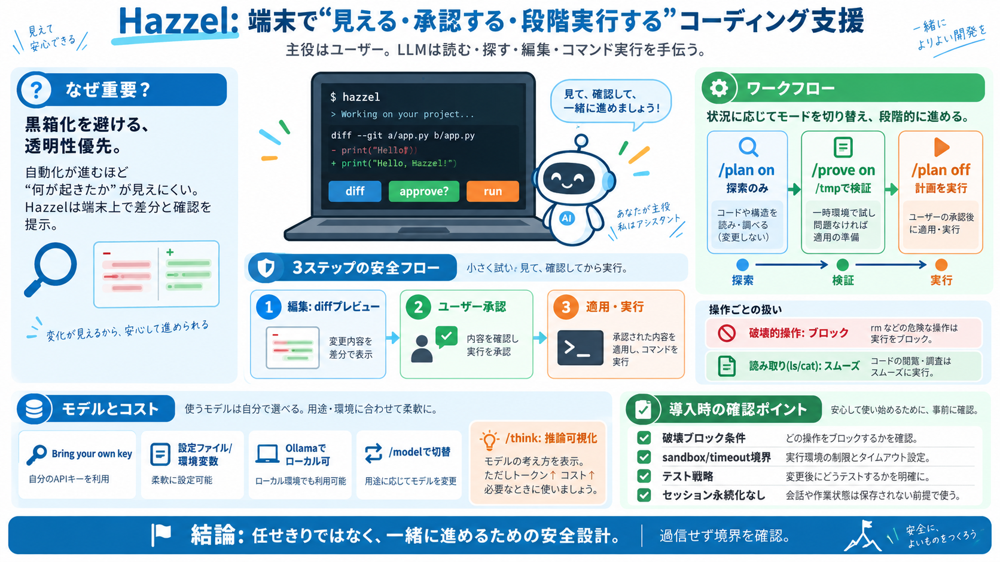

Odysseus AI License: AGPL-3.0 Explained for Users & Forks
Odysseus AI launched under the MIT license on May 31, 2026 and switched to AGPL-3.0 in early June. The README states the…

Odysseus AI launched under the MIT license on May 31, 2026 and switched to AGPL-3.0 in early June. The README states the…
This has one direct implication — if you let users access any AGPL licensed software over a network, then that is also a…
To take it even further: it seems like even if the source code is completely free companies gives back. As for now my o…
Although anyone can use the AGPL V3 license, it’s not popular with organizations. The restrictions placed on any subsequ…
Skip to content Open Source Initiative # GNU Affero General Public License version 3 Version 3.0Submitted: January 30…